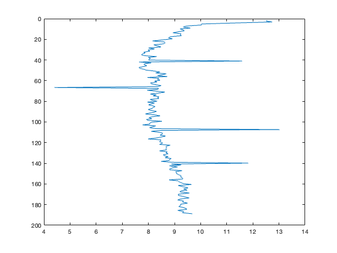
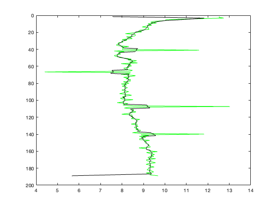
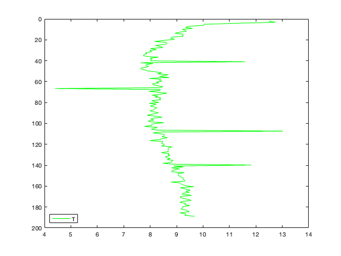
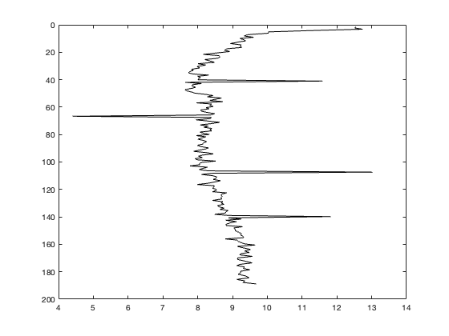
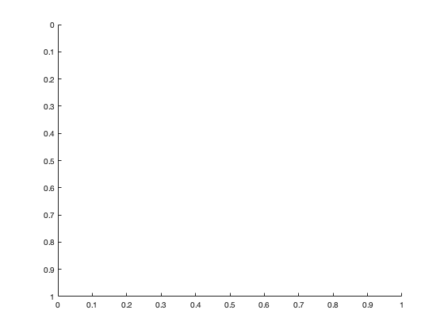
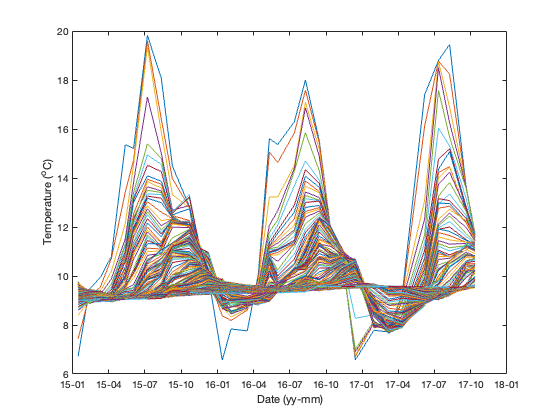
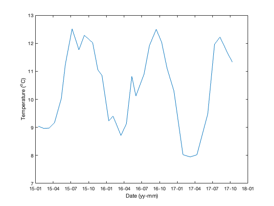
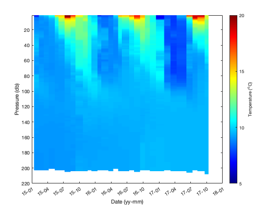
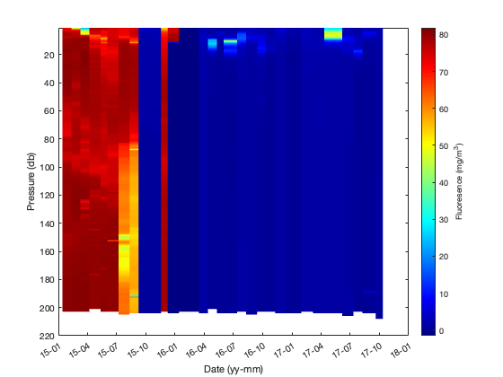

Lab 7 - Saanich Time Series Data and signal processing
Contents
Last edited Oct 2024
Objective
To learn about various methods for processing your data to remove data spikes and noise. We will look at de-spiking and smoothing.
To investigate a time-series data set from Saanich Inlet.
Part I: Data Processing
I-A: Dealing with noisy data
Suppose you receive the data file recorded.mat after a CTD profile is taken. The data file includes Temperature (oC) and Pressure (db) data for a single CTD cast taken in Saanich Inlet at Stn S4. But something was looks odd with the temperature data... Can you do anything to recover the data from this cast?
Let's start by having a look at the data set:
clear
load recorded
T = recordedT;
P = recordedP;
Now visualize the data by generating a plot.
plot (T,P)
axis ij
 What seems to be the problem with these data? Do you believe that all the data are real? Are there any suspicious points?
Let's start by smoothing the data using the conv2 function.
win=ones(5,1)/5; %window size equal to an array of ones with the number of data points you want to smooth over divided by the size of the array T_sm=conv2(T, win,'same');
figure(2); clf plot (T,P, 'g', T_sm, P,'k') axis ij
Something looks really odd with this... if we smooth the data when there are still really large spikes in it, the smooth includes those points and just increases the problem. How do we get rid of those large spikes?
I-B: Despiking the data
You and I can see "by eye" which points look to be suspicious. But in order for the computer to find them, we need to give it some criteria for what makes a "bad" point. We do this by computing some basic statistics and setting a criteria that the points must meet.
First, we look at the mean of the data set
% calculate mean here
And then the standard deviation.
% calculate standard deviation here
We can now set our criteria - any point that is outside of our 'good' range will be identified. But what criteria should we use? Let's look at the plot again, but this time include some lines to indicate the statistics we just calculated
figure(2); clf plot (T,P, 'g') hold on % plot the mean and standard deviation here axis ij legend ('T', 'location', 'southwest')
How do we identify points outside of our 'good' range? There are two good methods to do this. We can identify those points using find or using a for loop.
For this tutorial, we'll use find. Our first step will be to initialize a 'despiked' variable.
Tdespike=T; %initialize the variable by setting the new one = old one.
Find all points that are outside our criteria.
% badinds = find(??);
Set all points with bad data to NaN; all other points stay the same.
% ?? = NaN;
Quick plot to see what we've done -
figure(3); clf plot(T,P, 'g', Tdespike, P,'k') axis ij
What do you think of this despiking method? What points were identified as "Bad Points" under our criteria?
% badinds
Now try smoothing the despiked data
% Tdespike_sm=conv2(??);
And another quick plot to check what we've done
figure(4); clf % plot (T, P,'y', Tdespike, P,'g', Tdespike_sm, P, 'k') axis ij
*Ignore the large new spike at the bottom* How does this data set look now? Did we do a decent job? Is there any way of knowing? Are we now 'seeing' the actual structure of the water column?
Plot our 'fixed' data set against the actual data
The S4 data set we just looked at was from a cruise in May 2008... but I added a bunch of noise to the T data. Our data is much smoother than that! Let's try plotting the actual data against our corrected data...
load mystery figure(5);clf % plot both data sets here %
Part II: Introduction to the UBC Time Series Data
Today, we will be using a time-series data set collected by the Hallam lab at UBC from a station in Saanich Inlet (48°35 N, 123°30 W). These data are packaged into a large structure which you should be able to work with; you will be using these data in your final project.
I've provided the data in the Lab7.zip folder.
Load the CTD data from the Hallam lab. Let's have a look at what's in there.
clear
load HallamGrid.mat
II-A. What CTD data do we have and what processing has been done?
Look at your workspace. Jody Klymak has processed the Hallam lab data into a grid, with 1 CTD cast per column averaged into 1 m depth bins.
The cgrid variable contains Hallam CTD data for 2015 - 2017. This is only available in raw or matlab form. The data set would be too large for a spreadsheet. Note there are 32 days of data available.
% cgrid = % pres: [220x32 double] pressure(db % t: [220x32 double] temperature (oC) % c: [220x32 double] conductivity (ms/m) % Flu: [220x32 double] Fluorescence (mg/m3) % O2: [220x32 double] dissolved oxygen (umol/kg) % Par: [220x32 double] light (uE/m2) % sal: [220x32 double] salinity (psu) % time: [1x32 double] MATLAB format dates % depths: [1x220 double] % den: [220x32 double] density as sigma-t (den-1000, kg/m3) % lat: 48.5833 % lon: -123.5000 %
Let's start by examining what is in cgrid.mat. We can examine the data with respect to time:
figure(6);clf plot(cgrid.time, cgrid.t) datetick('x','yy-mm') xlabel('Date (yy-mm)') ylabel('Temperature (^oC)')
Whoa - that's a lot of lines! In fact, there are 222 lines on the graph, one corresponding to each depth in cgrid.depths. How do we look at just one depth? You need to specify the row that the data you are looking for is in. Examine cgrid.depths to see how the rows are named.
So... what is the temperature at 20m over time?
figure(7);clf plot(cgrid.time, cgrid.t(20,:)) % Note the syntax here - plot the 20th row and all the columns datetick('x','yy-mm') xlabel('Date (yy-mm)') ylabel('Temperature (^oC)')
Now - what if you want to look at all those lines at once? Let's make a section plot of the data. You've done them before, looking DOWN at the bathymetric data. Now let's look sideways, with time on the x axis, depth on the y-axis, and 'property' on the colour axis(z axis).
figure(8);clf pcolor(cgrid.time, cgrid.depths, cgrid.t) shading flat axis ij datetick('x','yy-mm') xlabel('Date (yy-mm)') ylabel('Pressure (db)') c = colorbar; c.Label.String = 'Temperature (^oC)'; caxis([5 20]) colormap(jet)
NOTE - you will need to use caxis and an appropriate colormap to zoom in on the data. ASK FOR HELP if you haven't figured out caxis and colormap yet!
NOTE - you may also want to overlay contours of another property (density or sigma-t) on top of your original pcolor plot. If you don't yet know how to do that, see the Lab 5 (map) key posted on the lab web page.
II-B. De-spiking and Smoothing the Hallam data
Note that the Hallam lab CTD data have been processed and are in fairly good shape. We probably don't want to smooth these data any farther for most uses - and the CTD casts were taken about one month apart, so we definitely don't want to smooth in time.
But... there are still some bad data points in the data set. In particular, the fluorescence sensor appears to not be working in the beginning part of the data series. This is most visible when using pcolor to view the data.
figure(9);clf pcolor(cgrid.time, cgrid.depths, cgrid.Flu) shading flat axis ij datetick('x','yy-mm') xlabel('Date (yy-mm)') ylabel('Pressure (db)') c = colorbar; c.Label.String = 'Fluoresence (mg/m^3)'; colormap(jet)
Yikes. Looking at that plot, it appears that all data prior to January 2016 had a different calibration coefficient (which we don't have).
How do I know the data are bad? Well, what is the 'normal' range for Fluorescence in the ocean? Normally, we expect to see higher fluoresence in surface waters and low fluorescence in deeper waters. The way the CTD is calibrated, fluorescence should range between 0 and ~10 mg/m3 (with occasional excursions above 20 mg/m3 when phytoplankton are blooming!). So we also should not see any negative values.
In order to remove data from a data set, you need to have a good reason! In this case, it is probably best to remove entire CTD casts rather than just picking particular points. See if you can determine a good way to remove the obviously bad data but leave all the "possibly good" data.
This is the end of the guided tutorial... See the ASSIGNMENT section at the bottom of the document and then use the guidelines in the code below to complete the tasks. There are two main sections: practicing the despiking and smoothing we just did, and working with the 2015-2017 Saanich Inlet data from the Hallam Lab at UBC.
Part III: Tips for the Assignment
Use the comments below to help you through Part I of the assignment.
Again, we will use some data from the VENUS site in our exercise today. Load the data from January 2007 for time, temperature, pressure, and conductivity. The data is stored in 3 files: Jan2007Temp.mat, Jan2007Press.mat, and Jan2007Cond.mat . Note that the data is stored in structures.
As you work through the assignment, you may want to plot your intermediate results roughly, just to make sure that you have calculated things correctly. You could also use the Array Editor, or other means, to look at the data values calculated.
These data obviously have some spikes. These spikes are probably bad data - caused by a variety of possible reasons (including sucking a jellyfish through the conductivity sensor!).
You already know two different ways to identify these outliers and remove them from the data set.
- using find
- using a for loop and if/else statement
Use either method 1 or 2 to find the bad data points. Then get rid of them - by setting them to NaN or by interpolating between two surrounding points to fill in the gap.
What about removing some 'noise' from the data? If we have no scientific reason to believe that the variability in the data is real, we may want to "smooth" it out. Or maybe we're only interested in longer term trends, but the short-term variability makes it hard to see those trends. We can use MATLAB to calculate a 'running mean' - we use conv2 to calculate that 'moving average' based on the size window we establish. Each point is given a new value that is the average of all the values in that window.
You will need to figure out the time interval of our data, and then smooth the data so that each point becomes the average of all the data taken in the 15 minute interval surrounding it.
ASSIGNMENT
You need to hand in 1 file:
- Lab7CodeYourlastname.m that contains only the code needed to do the following:
Part I: Despiking and Smoothing VENUS timeseries ( /10)
- Load VENUS data sets (T, C, P, time) from Jan 2007 and calculate the salinity.
- Using find, limit the salinity data to only January 4 through January 14.
- Set criteria for 'bad points' and despike the calculated salinity using either find or a for loop (your choice). Include a COMMENT as to why you chose the criteria you did.
- Smooth the salinity data using conv2. Use a large window so that each data point is the moving average including points measured over a 15 minute period. Make sure to re-set the data values at the beginning and end of the series (to NaN or to the original values).
- Plot the original salinity and the despiked/smoothed salinity on the same graph (overlay the smoothed data on top of the original data; use a different colour for each line). Label with all appropriate information.
Part II: The 2015-2017 Hallam data set ( /15)
- Load the Hallam data structure
- Plot the salinity at 14m depth and at 54m depth vs time.
- Plot the vertical profiles for T, S, and oxygen for the CTD cast from 13 July 2016. Use subplots. HINT: use datestr(cgrid.time) to turn the dates of each CTD cast into something you can read!
- Find the bad data in the cgrid.Flu field and set those bad values to NaN (see text description of the Hallam data above for hints on criteria). You don't need to correct the bad data found near the bottom in Sep 2017. Save your corrected data structure in the data file: Lastname.mat
- Using pcolor, plot the oxygen vs time and overlay contours (use contour) of sigma-t. Use appropriate colour settings including caxis to emphasize the details of the dataset.
- As a COMMENT below your section plot code, answer the following question: Q1. Discuss the features you see in the oxygen plot. Use specific language: What are the oxygen values and how do they change over time? At approximately what time of year do these changes occur? Describe the oxygen at both shallow and deep regions.
NOTE
This is a long exercise, but a lot of it is review. Please try to complete as much as possible before lab this week so you know what questions you have!
As always, you will be marked on 1) your answers to the questions; 2) your ability to follow directions; and 3) the elegance of your code. Keep things neat and organized. Use % to make comment lines to explain what you are doing. Use the semicolon ; after commands to suppress unnecessary output. Make sure you follow the file name conventions I've asked for.
You may hand your lab assignment in to the Lab 7 Assignment dropbox on Brightspace.
At the beginning of this lab for Monday's group (on November 4th), and at the beginning of next lab for Wednesday's group (on November 6th), we will use the first part of our lab time to introduce the datasets you will be using for your final project. DO NOT miss this introduction!
This is the last lab assignment! Please come to the project orientation (on November 4th or 6th) for an introduction to the final project. For the last weeks of term, Becky and Jamie will be present at the normal lab times to assist you with coding and interpretation questions for your projects.